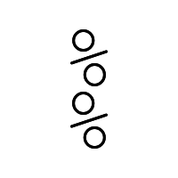

〜2014年5月下旬〜
bashと同じように
% foo=barbaz; echo ${foo:2:3}
rba
という感じの表記も可能だが、これはまさにbash互換なので0から数える仕様になってる。
startとlengthだ。一方zsh本来の記法は
% foo=barbaz; echo $foo[3,5] rba
のように1から数えてstart,endになってる。なんともすごい世界だ。
この記法だと代入もできて
% foo=barbaz; foo[3,5]=hoge; echo $foo bahogez
左辺にもなれる。start,endなので
% time=1234; time[3,2]=:; echo $time 12:34
のようにendをstart-1に指定すればその直前に挿入にすることができる。
RSSが更新されないのが解消されたと思ったら、今度はGMANE自体が更新されなくなってしまった。
ruby-cvsだけじゃなくて全体なので、なんか非常事態が起きてるとしか。
bugsのRSSはruby-trunkとかプロジェクトごとに分かれてるので、
ちょっと扱いにくいしどうしたもんか。
zshのschedもいいが、結局のところタスクスケジューラを使うことにした。
そのままだとPATHとかがWindowsのままなのでそのあたりを注意すれば特に問題はない。
うっとうしいのは実行時にコマンドプロンプトのウィンドウがちらっと表示されること。
How to run a cygwin executable with Windows XP TaskScheduler without opening a terminal? - Server Fault
によればrun.exeを使えとあるが、これではなぜか解決されなかった。その次のVBはいけた。
Set WshShell = CreateObject("WScript.Shell")
WshShell.Run chr(34) & "C:\Batch Files\syncfiles.bat" & Chr(34), 0
Set WshShell = Nothing
これをちょっといじって、1行で。
CreateObject("WScript.Shell").Run "C:\Cygwin64\bin\sh /home/eban/bin/foo.sh", 0
0がウィンドウを出さないという指定。chr(34)は"で空白を含むパスのときには必要。
VBだと
WshShell.Run """C:\Batch Files\syncfiles.bat""", 0
とも書けるらしいが、これはやっぱわかりにくい。
というtweetを数ヶ月ほど前にどこかで見かけたのを思い出したのでconvertで試してみる。
たしか「あ」とかだった気がするがまあきっと何でもいいんだろう。
適当に「%」にしてみる。
% convert -size 200x200 xc:none -font Courier-New-Regular -pointsize 100 -gravity center \ -draw 'text 0,-30 "%"' +repage p.png
中心をずらさないと重ねたときに真っ黒になるのでちょっと上にずらした。
あとはrotateしてcompositeするだけ。
% convert -size 200x200 xc:white \( p.png -gravity center \( +clone -rotate 180 \) -composite \) -composite 180.png
180度回転して重ねる。これを90,45,22.5と進める。長くなるがわかりやすいのでそのまま。
% convert -size 200x200 xc:white \( p.png -gravity center \( +clone -rotate 180 \) -composite \( +clone -rotate 90 \) -composite \) -composite 90.png % convert -size 200x200 xc:white \( p.png -gravity center \( +clone -rotate 180 \) -composite \( +clone -rotate 90 \) -composite \( +clone -rotate 45 \) -composite \) -composite 45.png % convert -size 200x200 xc:white \( p.png -gravity center \( +clone -rotate 180 \) -composite \( +clone -rotate 90 \) -composite \( +clone -rotate 45 \) -composite \( +clone -rotate 22.5 \) -composite \) -composite 22.5.png
結果。

おお。なかなかいいね。もとが「%」だったとはとても思えない。
最近合成した東京アメッシュの画像をデスクトップに表示させてるんだけど、
スライドショーってやつは1枚だけだと更新しても再読み込みしてくれない。
しかたなく無駄に違う画像を置いてみるが、それはそれでなんか違う。
ふと思いついてもう1個は同じものをダミーとしてコピーすればいいんだとやってみるといけた。
symlinkでもいいようだ。
なんだかよくわからない名前だが、英語のほうは
Exchange 2007/2010 Calendar and Tasks Provider
という名前らしい。ThunderbirdのLightning拡張のアドオンになる。
最近更新されないと思ったらMozillaのadd-onサイトから消えていた。
本家を見に行ったらもう保守やめるよとの宣言が。
Exchangeサーバーのバージョンが上がってから、
アラームが死んでいるのでどうしたもんかと思ったが、
こういう事情じゃ別の方法を考えたほうがよさげだ。
そろそろ@rubyciさんのためになんか代替案を考えねばと思っていた矢先、Gmaneさんが復活した。
流石に全部は復旧されなかったが、まあよかった。
それはそれとしてリンク先はどうもリダイレクトされるようなので、
その先のURLに変更しておいたほうがよさげだな。
view=revじゃなくてview=revision。
なんかうちのparallelはよそとは違うなと思ったら、moreutils製だった。
機能的にはGNU parallelのほうが上のなのでこっちを入れたいが、
moreutilsをあきらめないといけない。
spongeとかchronicはcrontabで使ってるだけにuninstallはしたくないよなあ。
どっちかを野良ビルドするか。
GNU parallelはPerlなのか。だったらこっちを野良にしたほうがいいな。
ftpを見に行ったら22日リリースにこだわっているようだ。
いつのまにかWindowsがそんな設定になっていて、
Win+Rでなにか実行しようとするとタイトルのようなお知らせが。
たしかにコマンドプロンプトを開いても、
タイトルには「管理者」がついてるし、
atコマンドもアクセスが拒否されない。
ぐぐるとセキュリティポリシーだというとで。
こんなところをいじった覚えはないし、
なにかアプリをインストールした際に変更されたんだろうか。
昔のWindowsに戻ったような気分。元に戻しておこう。
[コントロールパネル]-[管理ツール]-[ローカルセキュリティポリシー]-[ローカルポリシー]-
[セキュリティ オプション]の
[ユーザー アカウント制御 : 管理者承認モードですべての管理者を実行する]
を有効に。無効にすると管理者特権で実行される。
manにも書かれているのでそんなもん感じる必要もないはずだが、
xargs気分のつもりでいるといろいろと嵌る。
% convert -fuzz 60% -trim foo.jpg -format "%f %wx%h%X%Y" info: foo.jpg 854x409+16+25
これは余白を除去した結果を画像を保存せずにwxh+X+Yのような情報を表示しろという意味。
wとhが横と縦、XとYが左上からのオフセット。
これをそのままparallelに通すとエラーになってしまう。
% parallel convert -fuzz 40% -trim {} -format "%f %wx%h%X%Y" info: ::: foo.jpg
foo.jpg
convert.im6: unable to open image `%wx%h%X%Y': そのようなファイルやディレクトリはありません @ error/blob.c/OpenBlob/2638.
convert.im6: no decode delegate for this image format `%wx%h%X%Y' @ error/constitute.c/ReadImage/544.
フォーマットに空白を含んでいるので""で囲んでいるのになぜかばらばらになっている。
違和感とはここで、parallelはシェルを介してから実行されるので二重にクォートしあげないといけない。
% parallel convert -fuzz 60% -trim {} -format '"%f %wx%h%X%Y"' info: ::: foo.jpg
foo.jpg 854x409+16+25
manにわざわざQUOTINGというセクションを設けてまで書かれているが、
そうは言ってもこれはめんどくさい。
一応そのために-qというオプションが用意されてる。
% parallel -q convert -fuzz 60% -trim {} -format "%f %wx%h%X%Y" info: ::: foo.jpg
foo.jpg 854x409+16+25
-qは問答無用なのでクォートして欲しくないところもやってしまうから注意ということらしい。
数分間に数百通とか送られた日にゃもう対処できないわけで、最終的にはmailmanもpostfixも停止。
もう個別に対応は無理だと判断しpostsuper -d ALLしたら50000通もたまってた。
ruby-talk MLはすでに秘密の穴はなくmembers onlyになっているが、Fromを詐称されていた。
最初は気づかなかったが第2陣で見慣れたメールアドレスが出てきて気づかされた。
それにしてもspamassassinの結果も
X-Spam-Flag: YES X-Spam-Status: Yes, score=5.8 required=5.0 tests=FREEMAIL_FROM, FSL_HELO_NON_FQDN_1,HELO_NO_DOMAIN,RDNS_NONE autolearn=disabled version=3.3.1
とちゃんとspamと認識しているのに通ってしまっている。
mailmanはメンバーだと素通しなのか？
一応犯人と思われるIPアドレスもブロックしようとしているが、
この設定もメンバーには無効となるとちょっと困るな。
その時はHandler書くか。
とりあえずしばらく全ML停止する予定。ruby-talk MLだけ止める設定がわからない。